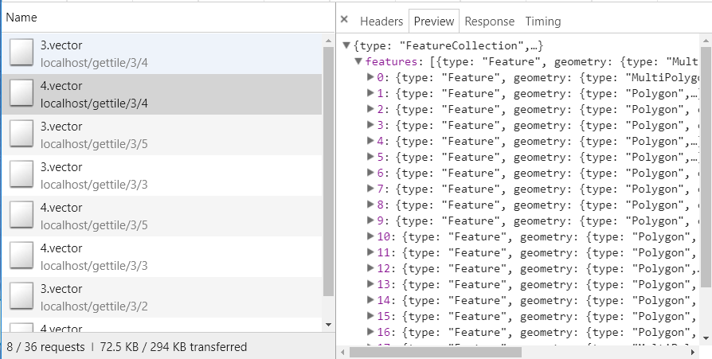

矢量切片的使用尝试1—openlayers应用
条评论对于 GIS 行业来说，栅格切片已经处于垄断地位很长时间了，但随着 mapbox 的发展，矢量切片越来越勾引起大家探究的欲望，最近我也小小的观望了下，发现现在技术还是比较成熟了，使用上却不是很广泛，遂分享下自己瞎折腾的一些路，想着帮助大家少踩点坑，本文将介绍下服务端和网页端中 OpenLayers 对于矢量切片的一些应用。
在项目实际使用中还是建议大家首先了解下矢量和栅格切片的优缺点，网上能搜到的很多，水平有限，这里不献丑了。对于我个人来说吸引我的无非三点：1.支持大数据；2.自定义渲染；3.要素交互。
不多说了进入主题吧，OpenLayers 中支持ol.source.VectorTile,对于我们来说想使用它无非就是创造这一类型的source，目前来说想要自定义矢量切片源我探索的有以下几种方式：
geoserver 中的 vectortiles-plugin 插件
这种方式网上教程很多，是大家目前常用的，优点是支持的数据格式比较多，输出的数据格式也很多，geojson、topojson、mvt 都能做到，不做过多介绍
mapbox 开发的 geojson-vt 库
这个库可能大家不去仔细关注都不会发现，mapbox 推出，geojson-vt，作用很简单，官方说明简单明了，把 geojson 转换成 mvt 格式的矢量数据源。
翻译一下使用：
// 通过geojson数据源构建切片索引 |
拿到 features 后无非就是做样式调整之类的工作了。OpenLayers 官方也有一个 demo，叫做geojson-vt integration，详细介绍了怎么在 OpenLayers 中结合使用该库。
我在实际使用中发现，这个库可以说很 imba 了，有测试 200M 以上的 geojson 源文件，都能流畅的展示出来。mapbox 官方对于这个库的说明是，把 geojson 切割成矢量切片在浏览器端使用，所以我觉得因为网络传输的不确定性，对于小一点的数据量，可以考虑直接在浏览器端使用这个库。
geojson-vt 的 nodejs 服务端实现
(｡･∀･)ﾉﾞ嗨，既然是 js，那就意味着，我们可以用 nodejs 搭建服务端呀，在浏览到某个层级时候，只请求当前需要的瓦片，不就能解决大数据的传输问题了，nodejs 大法好！
具体的代码可以移步github
这里对一些主要部分做一些说明
// 读取数据源文件，构建切片索引 |
// 从url中解析瓦片请求位置的x，y，z |
接下来是浏览器中的调用
var vectorSource = new ol.source.VectorTile({ |
你可以在 github 上看到 demo，执行安装启动
cd ./1.vector_tile |
打开 vectortile.hmtl 可以在 network 中看到瓦片请求了。
